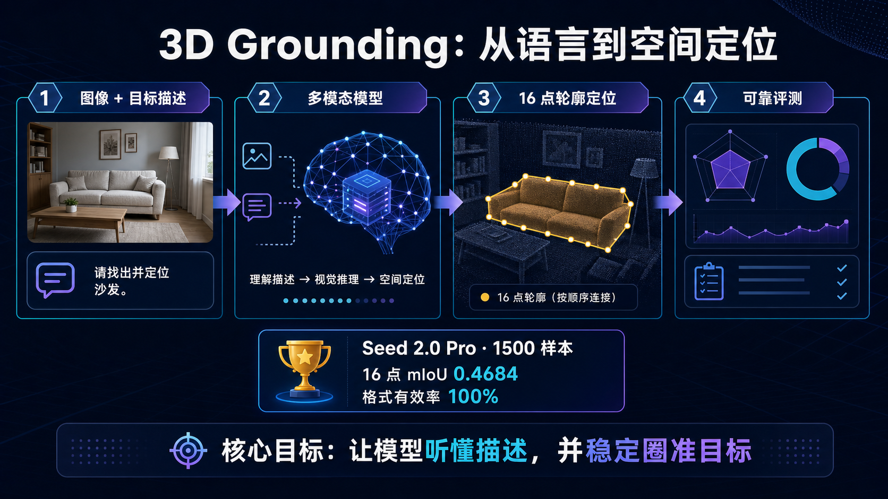

建立可信的 2D 基线
统一数据、输出格式、评测指标与稳定性复测协议。
One picture
语言负责说明“找谁”，视觉模型负责理解“在哪”，多边形负责表达“边界是什么”。

How it works
每一步都能单独检查，让失败不再只是一个模糊的最终分数。
读取图片与自然语言描述，判断用户指的是哪个具体对象。
结合类别、属性、相对位置和场景关系定位目标区域。
按顺序生成多边形坐标，用结构化结果表达目标边界。
同时计算定位精度、格式有效率与重复运行稳定性。
Verified benchmark
Seed 2.0 Pro 在 1,500 个均衡样本上的正式结果，格式错误按零 IoU 计入。
Project direction
统一数据、输出格式、评测指标与稳定性复测协议。
验证不同模型在精度、格式遵循和推理成本上的差异。
将语言指代与深度、三维场景和可交互空间表示进一步结合。